Префектура Хёго · Кобе · аквариум
«Атоа» в Кобе: аквариум, где рыб показывают со светом и сценой, как в театре
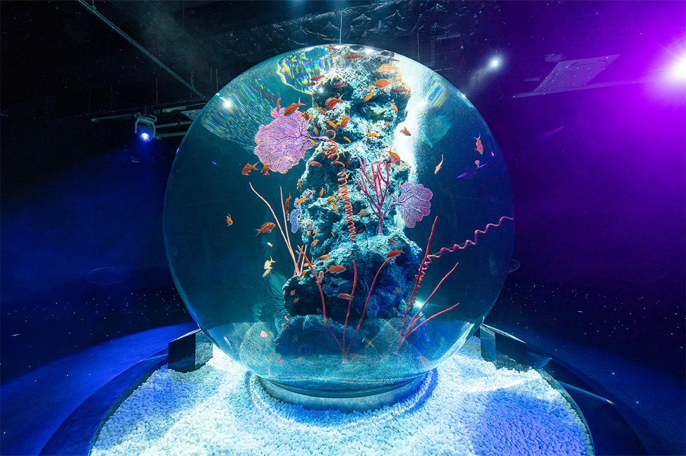
На набережной Кобе стоит аквариум, который устроен скорее как театр. В «Атоа» живых рыб, выдр и капибар показывают вместе с цифровым искусством и сценическим светом, а каждый из восьми залов построен вокруг одного главного аквариума.
Здание
Скала из гор и моря
«Атоа» (átoa) открылся осенью 2021 года в «Портовом музее Кобе», новом здании у воды. Кроме аквариума здесь работают фуд-холл и свадебный салон. Снаружи здание похоже на кусок скалы, и это не случайно: архитекторы строительной компании «Тайсэй» хотели показать, как земля поднимается, а вода её подтачивает.
Кобе зажат между горами Рокко и Внутренним Японским морем. Около миллиона лет горы здесь поднимались снова и снова, а волны, дожди и ветер размывали склоны и уносили грунт вниз. Из этих наносов и сложилась земля, на которой стоит город.
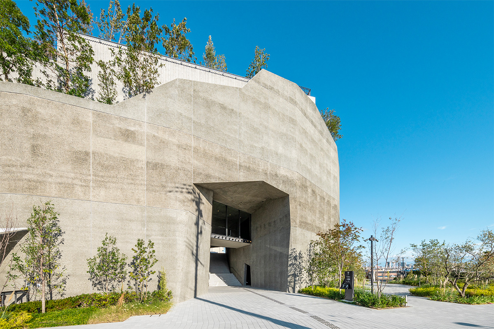
Ту же борьбу подъёма и размыва архитекторы перенесли в форму здания. Посетитель начинает путь в атриуме, похожем на грот, и поднимается всё выше, как по склону, до террасы на крыше, откуда видно порт. В бетон наружных стен подмешали камень из гор Рокко и Внутреннего моря, а поверхность размыли водой. Получились стены, похожие на геологические слои цвета местной земли. На крыше посадили деревья: по замыслу авторов, со временем зелень затянет здание, и оно станет продолжением самой земли.
2-й этаж
Пещера, море и лес
Путь начинается с «Пещеры начала», грота в поднявшейся земле. Но кроме искусства здесь всерьёз занимаются и самими животными. В «Атоа» живут около 3000 обитателей примерно 100 видов: рыбы, беспозвоночные, земноводные, рептилии, птицы и млекопитающие.
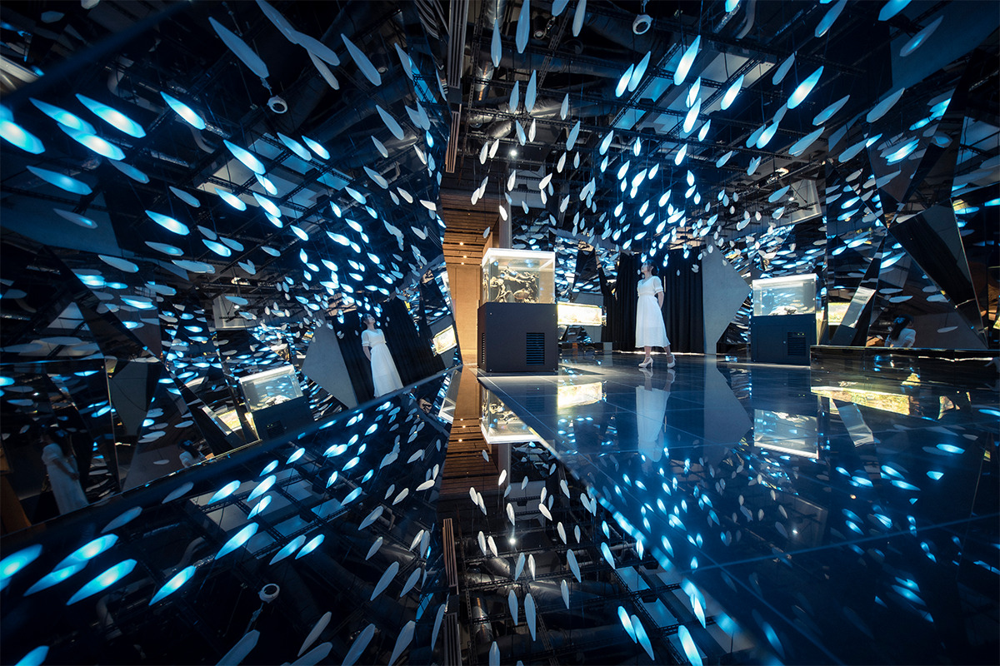
В зале «Колебания жизни» кажется, что плывёшь в толще воды. Сверху льётся синий свет и дрожит, как сквозь волны, а в аквариумах покачиваются морские животные: у одних причудливая форма, другие удивляют поведением.
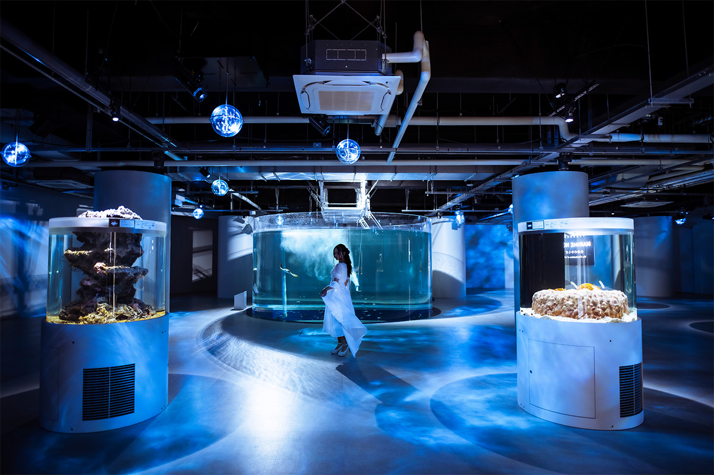
Зал «Лес духов» изображает лес у истоков реки. Под потолком стоит туман, сквозь него пробиваются лучи, как солнце через листву, а в аквариумах живут пресноводные рыбы и земноводные рек и ручьёв.
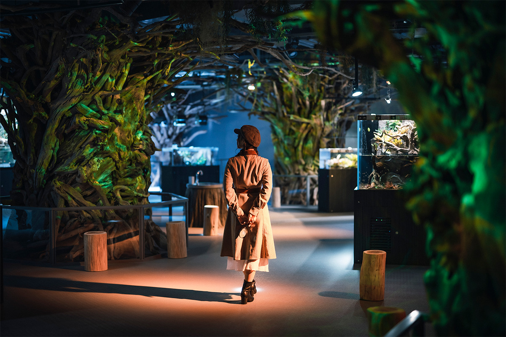
3-й этаж
Капибары, карпы и звёзды
На третьем этаже светлее. В зале «Комната поиска» свет падает сверху, с неба, и после тёмных залов здесь можно перевести дух. Над головой нависает аквариум необычной формы, и в нём неторопливо плавают капибары. Рядом плавают крупные пресноводные рыбы и яркие мелкие рыбки.
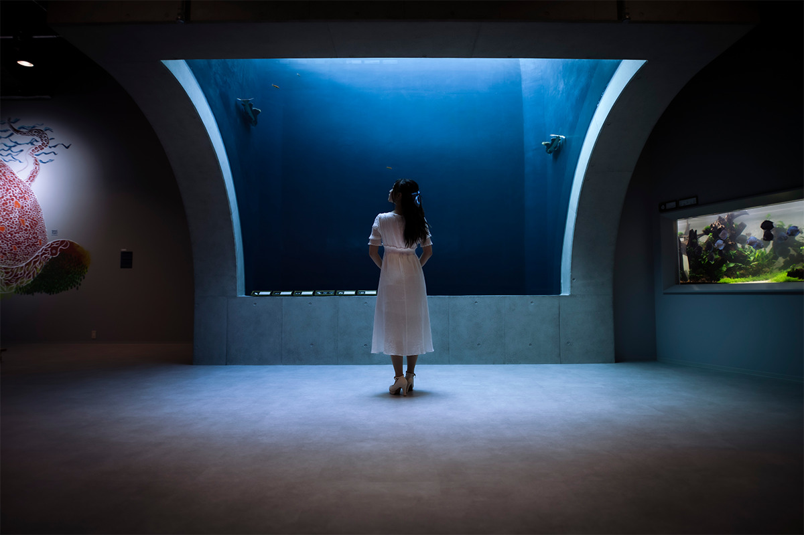
«Зал гармонии и огней» посвящён Японии. Свет меняется со временем и показывает по очереди сцены четырёх времён года, а под ногами плавают карпы. Здесь же идёт программа Ацуми Сакаи, мастера световых картин из вырезанной бумаги: её большие работы светятся в полумраке зала.
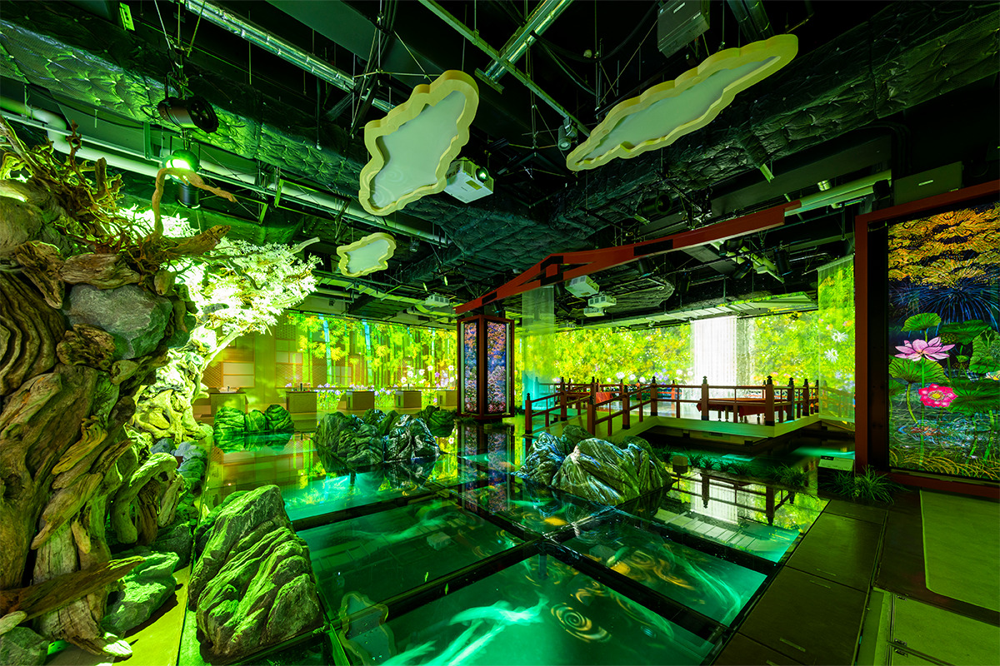
Особого внимания заслуживает зал «Чудесная планета». Он изображает космос, полный звёзд, а в центре стоит «Аква Терра», шарообразный аквариум диаметром 3 метра, один из крупнейших в стране. Туман и лазеры окружают его со всех сторон световой вуалью.
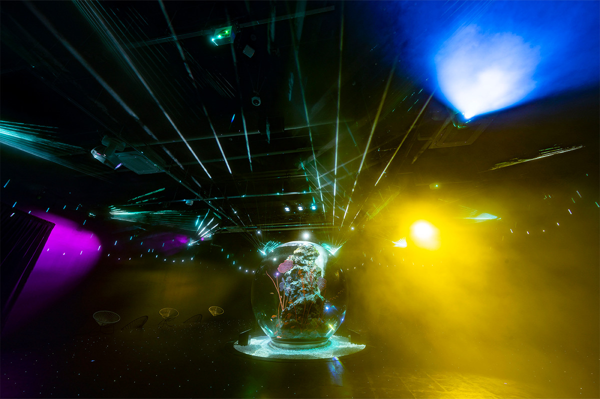
«Галерея поиска» рассказывает, как красиво и точно устроены тела животных. Опыты тут неожиданные: может появиться рыба, похожая расцветкой на вашу одежду, а ещё можно понюхать, чем пахнет у животных под хвостом.
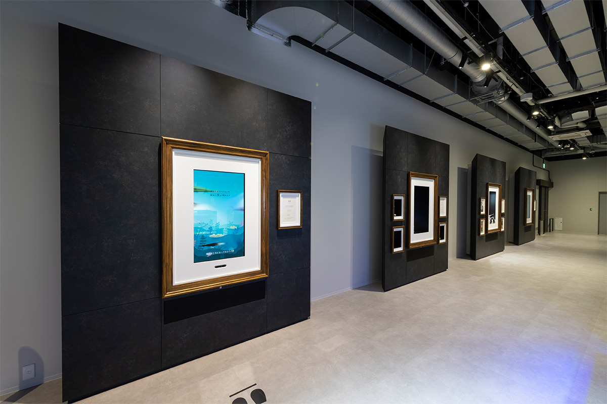
4-й этаж
Сад на крыше над портом
На четвёртом этаже аквариум выходит под открытое небо. «Сад у края неба» это площадка с водой и зеленью, где дует морской ветер и видно порт Кобе. Здесь живут капибары и азиатские бескоготные выдры.
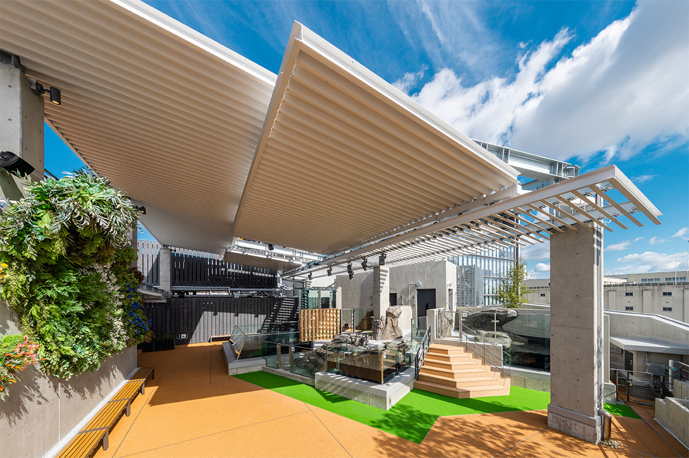
Искусство спрятано по всему зданию: на лестницах, у лифтов и даже в туалетах. Ищите рамы, они подсказывают, где смотреть, и обход аквариума превращается в игру.
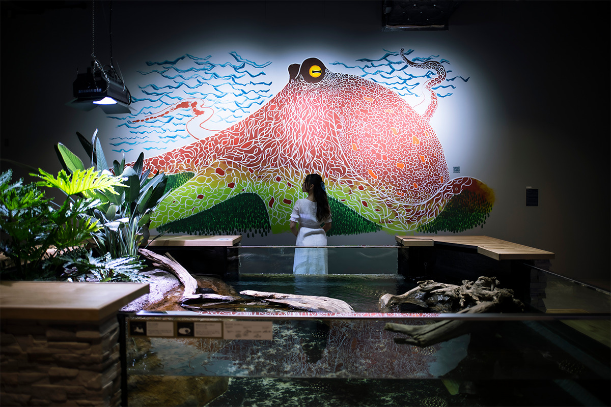
Кафе и магазин
Выдра на тарелке
В садовом кафе «Атокафе» под открытым небом продают еду и напитки, придуманные специально для аквариума. Темы у меню две, море и горы Кобе, а оформлено всё так, что хочется сначала сфотографировать. Больше всего внимания достаётся блюдам в виде выдр: их жалко есть.
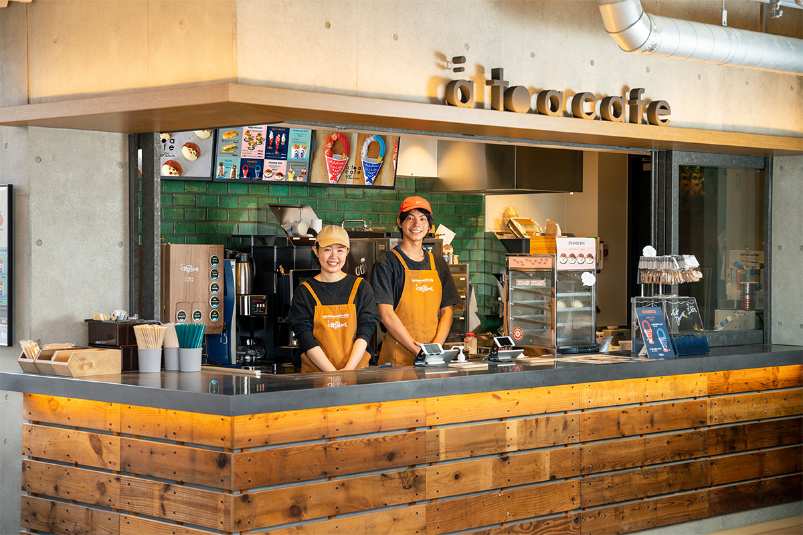
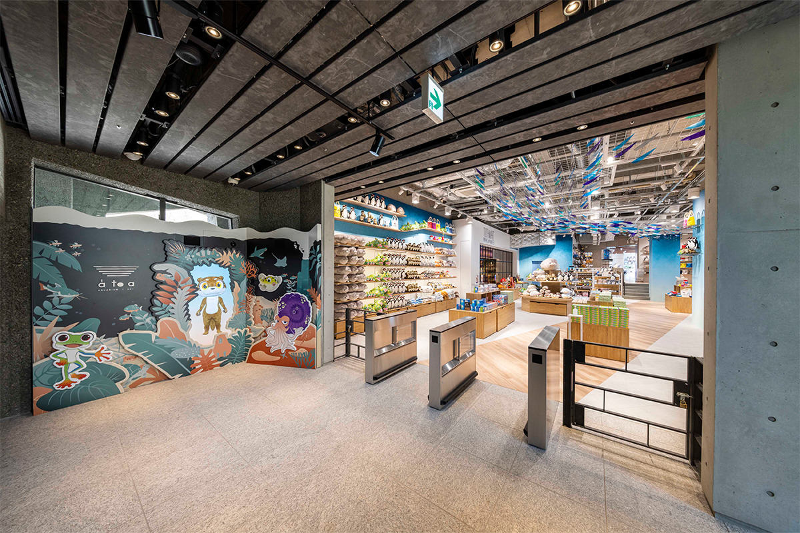
На первом этаже есть магазин: мягкие игрушки в виде морских жителей и стильные вещи с символами Кобе.
«Атоа»
- Адрес
- префектура Хёго, Кобе, район Тюо, Синко-тё, 7-2
- Телефон
- +81 78-771-9393
- Часы работы
- 10:00–21:00 (вход до 20:00)
- Выходные
- без выходных
- Цены / Вход
- взрослые (от средней школы) 2400 иен, ученики начальной школы 1400 иен, дети от 3 лет 800 иен, до 3 лет бесплатно; бронь и билеты на официальном сайте
- Сайт
- atoa-kobe.jp
Фото: átoa.